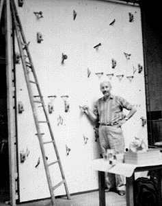
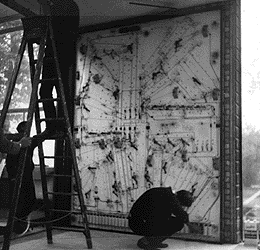
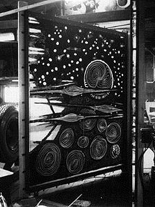
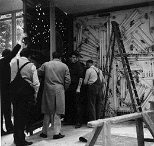

{kind=link}
This shows the inside of the kinetic painting with the front panel
hinged away to the left.....

CHRONOLOGY OF CONSTRUCTION:
First sketch at Oxford 14 April 1965
Construction began Atelier JAF, 164 Rue Vercongatoox, Paris 15 on 3 May 1965
Painting begun at JAF on 26 May 1965
Mural completed, Paris 1 July 1965, dissasembled and shipped to Oxford
Mural installed Oxford week of 31 August - 6 September 1965
ASSISTANTS:
Principal assistant - Ninos Calos, Paris
Mechanical construction - Atelier JAF, Paris. Director. Monsieur D.Accursi
Advisor on Perspex - T.A. Downing, ICI, Welwyn Garden City
DETAILS OF CONSTRUCTION:
Dimensions: 9 feet 6 inches high x 8 feet wide
Number of rotors: 29
Number of electric motors: 12 synchronous, 1 RPM
Number of flourescent tubes: 55
Number of incadescant lamps: 65
Four component Lumidyne system. LIGHTS, ROTORS, STATOR and DIFFUSOR
Photos of the piece:
Work in Progress:

Frank J. Malina Paris 15 May 1965

Wiring up

Painting the panel

Adding the Front panel
This shows the inside of the kinetic painting with the front panel hinged away to the left.....
Back to 'The Cosmos' home page
Last Updated on 10/05/96
This page is maintained by Chris Jennings